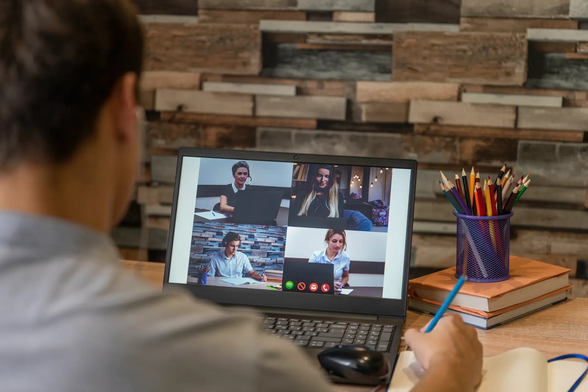
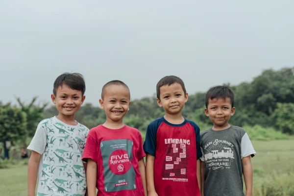

Tempat belajar dan berkembang bersama.
Kami percaya setiap orang tua bisa menjadi bagian dari perubahan anaknya. Banyak orang tua anak dengan kebutuhan khusus ingin membantu, tetapi sering terbatas oleh akses layanan dan biaya terapi. Rumah Pint.art hadir sebagai ekosistem pembelajaran yang mendukung orang tua melalui program online dan offline, agar mereka dapat memberikan stimulasi sesuai kebutuhan anak. Pemberdayaan orang tua adalah investasi jangka panjang bagi perkembangan anak.

Rumah Pint.art hadir untuk memberdayakan orang tua melalui edukasi berbasis ilmu, keterampilan praktis, dan pendampingan terstruktur baik online maupun offline, sehingga keluarga dapat mendukung tumbuh kembang anak dengan lebih mandiri dan berkualitas.
Menjadi ekosistem pembelajaran terpercaya yang memberdayakan orang tua agar mampu mendampingi tumbuh kembang anak secara mandiri, berkelanjutan, dan berbasis ilmu.
Kami percaya perubahan terbesar dimulai dari rumah, sehingga setiap program Rumah Pint.art dirancang terstruktur, terukur, inklusif, dan praktis agar orang tua dapat mendampingi tumbuh kembang anak dengan lebih efektif.
Program kelas orang tua ini hadir untuk mendampingi keluarga dalam memahami dan menangani tumbuh kembang anak secara terstruktur dan komprehensif, dengan materi yang praktis, mudah diterapkan, serta relevan dengan kebutuhan sehari-hari.
Memberikan penjelasan menyeluruh tentang tahapan fisik, motorik, bahasa, dan sosial-emosional agar orang tua lebih percaya diri dalam mendampingi anak.
Melatih keterampilan orang tua untuk mengenali tanda-tanda perkembangan sekaligus menerapkan stimulasi sederhana di rumah yang mendukung pertumbuhan optimal.
Membuka ruang berbagi pengalaman antar orang tua, memperkuat jejaring dukungan, serta menghadirkan kolaborasi dengan guru dan terapis untuk hasil yang lebih maksimal.
Ingin mengetahui progress dan level perkembangan anak? Anda bisa membooking sesi asesmen anak dengan bantuan psikolog, yang dapat disesuaikan dengan lokasi dan preferensi Anda. Kami menyediakan asesmen online berupa materi dan soal yang bisa diakses dari rumah, serta asesmen offline di wilayah Jabodetabek untuk sesi yang lebih imersif dan personal.
Kami menyediakan layanan konsultasi psikolog gratis untuk mendukung anak-anak dan keluarga. Layanan ini tersedia secara online agar mudah diakses dari rumah, serta offline melalui sesi tatap muka yang lebih personal. Dengan dua pilihan ini, orang tua dapat memperoleh pendampingan sesuai kebutuhan.
Kami mengadakan kelas online setiap bulan dengan beragam sesi edukasi interaktif untuk orang tua dan anak. Selain materi pembelajaran bagi orang tua, tersedia juga aktivitas seru yang bisa diikuti anak-anak dari rumah, seperti melukis, bermain games edukatif, dan kegiatan kreatif lainnya yang membantu menjaga anak tetap terstimulasi dan berkembang secara positif meski belajar secara daring.
Kami mengadakan kelas offline setiap bulan dengan beragam kegiatan edukasi untuk orang tua dan anak. Selain sesi edukasi bagi orang tua, tersedia juga aktivitas seru untuk anak-anak seperti melukis, bermain games, dan kegiatan kreatif lainnya yang membantu menjaga anak tetap terstimulasi dan berkembang secara positif.
